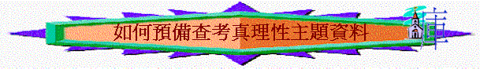

「耶穌對他們說：「無知的人哪，先知所說的一切話，你們的心信得太遲鈍了。基督這樣受害，又進入他的榮耀，豈不是應當的嗎？」於是從摩西和眾先知起，凡經上所指著自己的話都給
他們講解明白了。」路24:25-27
~耶穌講解真理，也有步署，次序的
一.決定真理的名題
～從守望中，看到肢體需要認識甚麼真理? 例如：聖潔、喜樂、信心…
～我們嘗試用「認識聖經」→望團友能多讀聖經為實例
二.決定查考的經文
～想起某些相關經文e.g.「認識聖經」→可能聯想起 詩119，提後3:16-17，彼前2:1-3
～或用幾段關乎該真理的經文
～不要怕一些似乎很直接已表達了真理(似乎不用查)，或一些很多人很熟悉的經文(似乎沒有新鮮感)，嘗試再仔細研讀，會發現一些以前可能發現不到的真理！
～舉例:經祈禱後，我們選取了提後3:16-17
三.仔細研讀神的話
～將經文擴大範圍，方便留意上下文及背景，由提後3:16-17→提後3:1-17
～放下先存的名題「認識聖經」從新研讀經文，或許發現研究後的名題與先前的看法不同
～讀出經文每字的意思及背後的原意
＞提前3→似講及末世中，有一些人迷惑人，敵擋真道，保羅要提摩太將神真道(從前學習的聖經)存在心中，不受人的欺哄
～找出經文背後的主題
＞提前3:14-17→似乎重點是特顯聖經的重要及寶貴，以致要存在心裏
～列出及歸納發現的真理
＞要存記聖經的原因→因聖經的寶貴:
(1)是神所默示的→非人創作的，世間找不到的，是由神所感動寫成，不是普通的書
(2)使人得救(有得救的智慧)
(3)使人歸正
(4)使人完全，使人成義
(5)裝備作善事(裝備信徒)
＞人對聖經應有的態度
(1)要存在心裏
(2)要尊敬(因從神來的)
(3)要確信
＞人得不著聖經的好處之原因:
(1)不信耶穌(v.15)
(2)不是屬神的人(v.17)
＞其它真理:
(1)少年人也可以從小明白聖經(v.15)
(2)聖經所有內容都是神默示，是神蹟
四.計劃查經的內容
1.收窄主題
★「認識聖經」這主題太闊，經查考後，我們可以有之前幾個較集中的名題
★但提前3:14-17→發現11點真理，沒有可能1次查完，按對象需要，按時間長短選擇一個重要真理名題──例如：聖經的寶貴
★定下目標:期望肢體查考，更重視聖經，更願讀聖經
2.建立脈胳
★主題:聖經的寶貴
脈胳:(1)神所默示(v.16)
(2)使人得救(v.15)
(3)使人歸正(v.16)
(4)使人完全(v.16)
(5)裝備行善(v.17)
3.設立問題
～問題的目的，是引導肢體自己去思想，發掘前設的真理，如路標一樣，引導他去尋找
～好的問題:是令團友不發覺是組長教導他去明白該真理，而感覺是自已思考得來的
★有彈性，容許組員思想一些你沒有發現或不在你前設下的真理
★不會太深，不會太淺，不會太闊，不會太含糊，不會沒意義!
A.引言的問題
～要令組員有興趣查考步署的內容，需要有一些引發動機的問題:
e.g.今日我們將查考一個題目:聖經的寶貴，在你生活中，有甚麼東西你覺得寶貴?(真接點出題目)
e.g.v.16題到「聖經」你未信前對「聖經」有甚麼感覺?你信了後，覺得聖經有甚麼寶貴地方?
B.理解的問題
～用一些問題帶入他們理解經文意思、字義、內容、背景
e.g.以「神所默示」此點真理為 ，v.16「聖經都神所默示的」何謂「默示」「都是」有甚麼含意?
C.真理的問題
～因理解了經文內容後，用一些問題帶入他們發掘文字意義背後的真理
e.g.從v.16節我們看到聖經和普通信書有甚麼分別?
有甚麼寶貴的地方? 人所寫的書有甚局限?
聖經又有甚麼超越的地方?
D.應用的問題
～用一些問題à將真理融入實際生活中，也在生活中應用真理
e.g.如果有人說聖經是人寫的，所以會有錯，你怎回應?
～人的集中力是十分有限，若連續12個思考經文真理問題
，會令組員很易不集中，所以每一點真理若有一些生活應用分享問題，可增加興趣，繼續查考經文，也幫助組員將真理融入生活中。
E.連貫的問題
~當我們引導肢體明白某一點真理後，可以用一些問題連入第二點真理，令整個查經內容更連貫
e.g.聖經除了是神所默示外，還有甚麼寶貴?
對人有甚麼益處呢?
我們試看v.15(引入使人得救真理)
F.彈性的問題
~如組員突然聯想到一些問題及真理是你之前沒有預計的，而組員有興趣探討及對他們有幫肋的，組長可以在有限時間中帶組員去思想
e.g.XX組員所題出的問題十分好，不知其他組員有何看法，試分享?
G.總結的問題
~人是很易淡忘的，要讓組員記得所查的內容及清楚真理的重點(可以每一點後有總結或查完所有真理後有歸納)
e.g.從v.16節中，我們看到聖經有甚麼寶貴地方?
e.g.經過今次查經後，我們學到甚麼真理?對你最大的提醒又是甚麼呢?